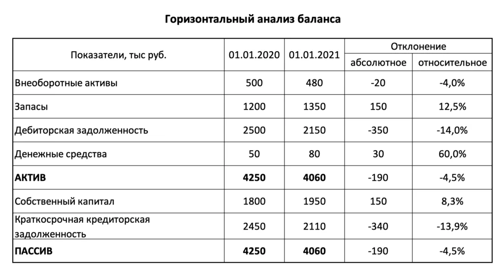

Горизонтальный анализ
Горизонтальный анализ отчетности – это сравнительный анализ финансовых данных за ряд периодов. Данный метод также известен под названием "трендовый анализ". При горизонтальном анализе отчетности (например, баланса), берется показатель (строка) и прослеживается его изменение в течение двух или более периодов. В качестве периодов могут браться любые одинаковые временные интервалы, но обычно для бухгалтерской отчетности используют поквартальный анализ или анализ данных по годам. Количество анализируемых периодов может варьировать в зависимости от конкретной задачи, однако качественный анализ, как правило, возможен, когда в анализируемом ряду более 3-х периодов.
Проведение горизонтального анализа
Горизонтальный анализ бухгалтерского баланса заключается в сравнении данных отчётного года с данными предыдущего года по каждой строке баланса. При анализе смотрят динамику изменения показателей. Чтобы оценить динамику показателя, рассчитывают темп роста, который показывает, во сколько раз вырос показатель. Для этого используют формулу: Темп роста = Отчётный год / Предшествующий период * 100%.
Алгоритм проведения горизонтального анализа включает в себя три этапа: берётся баланс за интересующие периоды (например, за текущий и прошлый год); находится разница между показателями текущего и прошлого периодов; исследуются изменения и делаются выводы. В качестве примера рассмотрим структурный анализ баланса:
